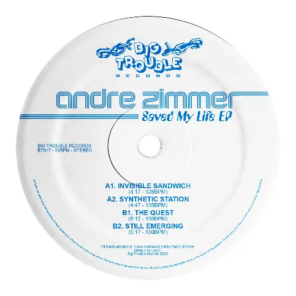
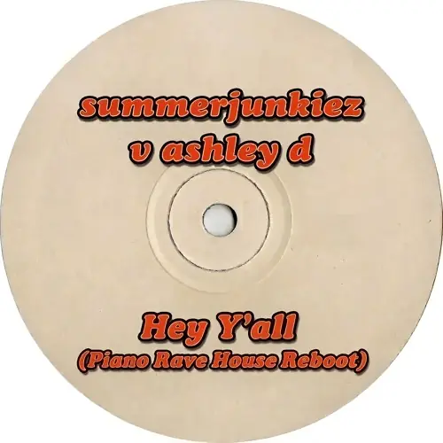
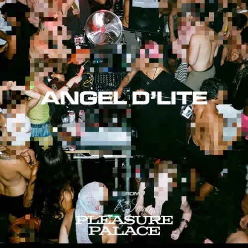
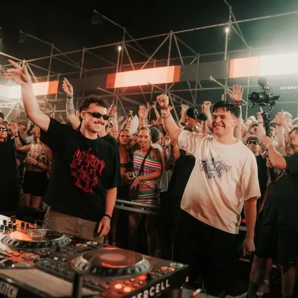
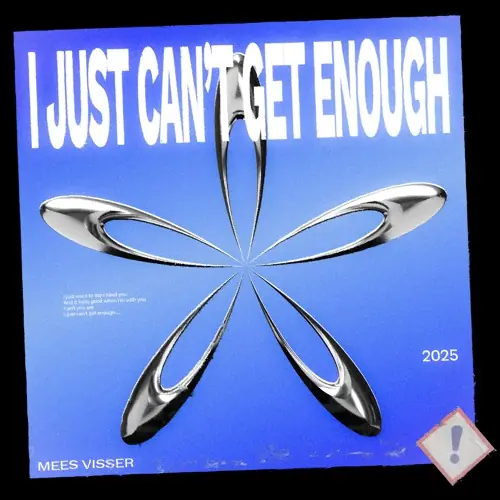
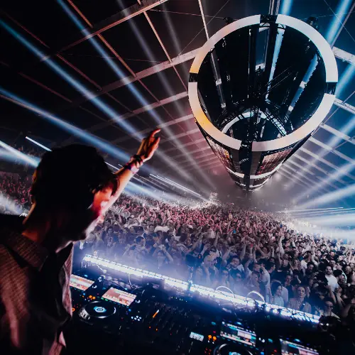
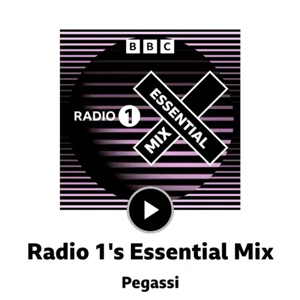

Plug in.
All the way.
Sounding is a SoundCloud player for iPhone, iPad, Mac, Apple TV and Apple Watch, with a pair of DJ decks bolted on. I make it on my own, and the beta’s open.
Volunteer as tributeIt’s a TestFlight beta. Things will break.
Everything you’ve liked, already there.
This is your Likes, straight from SoundCloud. Sign in once and it’s all there: likes, playlists, that set you saved at 4am. Nothing to import.
This is a 90-minute set. Pariah at Freerotation, all of it. Long mixes are what Sounding’s built around.
This is the tracklist. Sounding pieces it together from the uploader’s notes, the comments and Shazam. Missing one? Tap Identify and it’ll Shazam whatever’s on.
Tap a track to jump to it. Go on, try it. It works on this page too.














Pariah @ Freerotation 2024, Baskerville Hall, UK (06/07/24)
Pariah
Maōh - Xhaxché
0:00-1:28:20
24 identified
From your phone to the TV, mid-track.
First, the TV signs in by ear. It plays a short techno pulse (om-wom-wom), plus a signal too high for you to hear. Your iPhone picks it up, asks if that’s your TV, and signs it in. No QR code, no typing a password with the Siri Remote.
Tap Play On and pick the Apple TV. The set carries on from the same second, just louder.
Your iPhone and Watch are the remote. Skip, pause, and scrub with the Digital Crown, from your wrist (the phone’s down the back of the sofa anyway).
Then there’s Polyphony. Start it on one device and your friends’ iPhones, iPads, Macs and Apple TVs join with a six-digit code. They all play the same track in sync, like one big speaker. You pick the music, they’re the speakers (good boys, all of them).
Two decks, if you fancy it.
There’s a proper DJ mode in here: two decks, a crossfader, three-band EQ and a filter on each, loops, and four hot cues a deck.
It knows what’ll fit. Your iPhone, iPad or Mac works out tempo and key on the device, so you can see what’s compatible before you bring it in.
Auto Mix, for when you’d rather dance. It beat-matches the next track and brings it in on the phrase. Pick a personality: Wedding DJ blends, echoes out and cuts clean, while Junkie loops, ramps the tempo and jumps through a long set. It can follow the time of night or your heart rate, too.
Bring your own hardware. Plug a Pioneer DDJ-400 into the Mac and it’s mapped already. On iPhone and iPad, the decks drive the Apple TV, so you can mix from the sofa.
There’s a lot more on the Mac. Prep for beat grids and cue points, rekordbox in and out, CDJs, and cues that follow you to every device. It’s all on the DJ page.
Good for house parties, weddings you got roped into, or leaving it on as a very opinionated jukebox.
Fair warning.
Sounding isn’t official. SoundCloud didn’t make it and has nothing to do with it. It’s me, in Amsterdam, mostly in the evenings. There’s no support team, no roadmap and no promises. You get what you’re given, and some weeks that’s a bug.
There are no Sounding servers, no separate Sounding account and no analytics. Your sign-in stays on your devices, and sync goes through your own iCloud. Privacy policy
No ads either. Without SoundCloud Go+, though, tracks SoundCloud only lets you preview won’t play here, and offline downloads need Go+.
You’ll need iOS or iPadOS 26.5 or later, or tvOS, macOS or watchOS 27.
Volunteer as tributeOpens TestFlight.
Found a bug? Send it from TestFlight or email sounding@alex.forbes.red. I read all of it, I just can’t promise when. Support